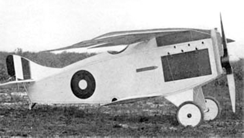

Bullet

- Разработчик: Christmas
- Страна: США
- Первый полет: 1919
- Тип: Истребитель
Американский истребитель Christmas Bullet (известный также как Christmas Scout или Cantilever Aero Bullet)
спроектировал доктор Уильям В. Кристмас (William W. Christmas) с помощью Винсента Дж. Бурнелли (Vincent Burnelli),
и построила фирма "Continental Aircraft Company".
Bullet был разработан на основе новейших аэродинамических и конструкторских достижений. Это был полутораплан деревянной
конструкции с неубирающимся шасси. Его свободнонесущие крылья не имели ни стоек, ни расчалок.
Первый прототип Bullet, законченный в середине января 1919 года и оснащенный рядным двигателем Liberty 6, разбился в первом
же полете. Второй прототип построили с рядным двигателем Hall-Scott L-6. Как и его предшественник, он тоже разбился в
первом полете летом 1919 года, после чего все работы над Bullet немедленно прекратили.
| Летно технические характеристики | |
|---|---|
| Модификация | Bullet |
| Размах крыла, м | 8.53 |
| Длина, м | 6.40 |
| Высота, м | |
| Масса, кг | |
| - пустого самолета | 839 |
| - нормальная взлетная | 953 |
| Тип двигателя | 1 ПД Liberty 6 |
| Мощность, л.с. | 1 х 185 |
| Максимальная скорость , км/ч | 282 |
| Крейсерская скорость , км/ч | 245 |
| Продолжительность полета, ч.мин | |
| Максимальная скороподъемность, м/мин | |
| Практический потолок, м | 4480 |
| Экипаж, чел | 1 |
| Вооружение: | только планировалось |